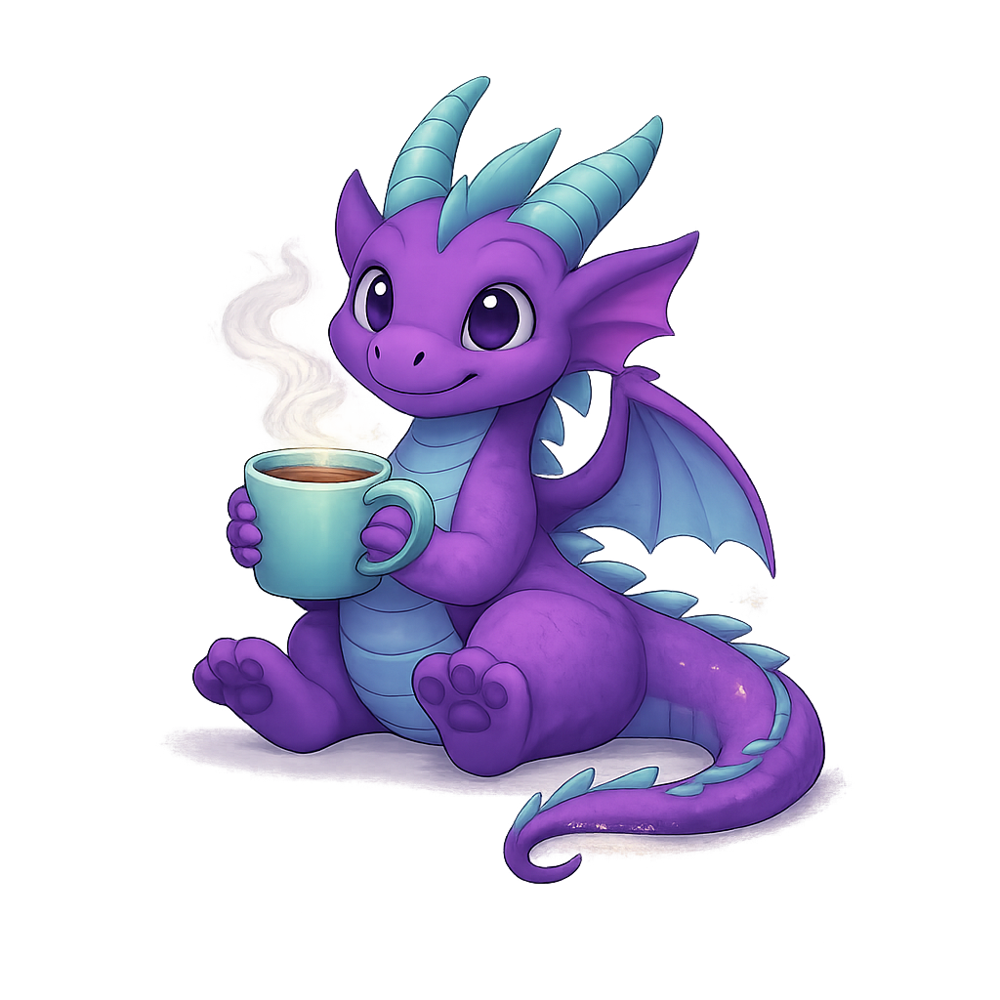
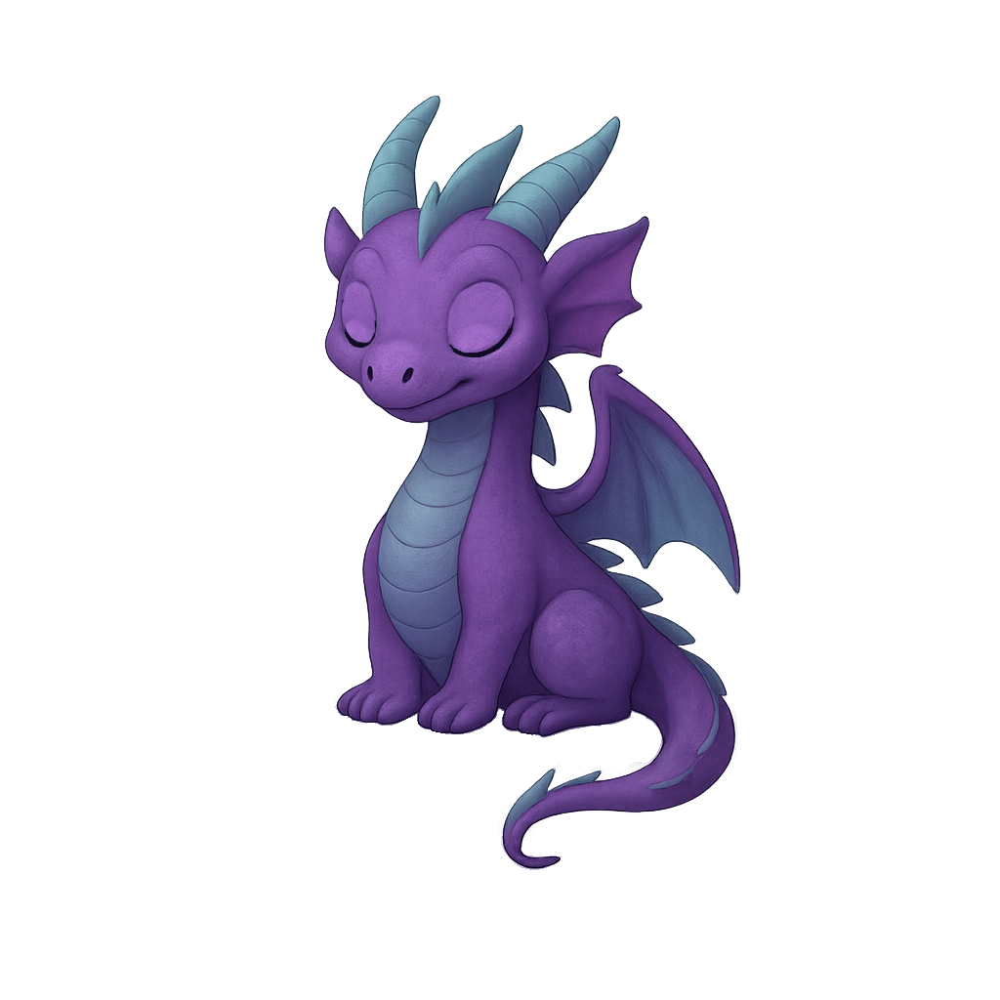

Welcome, there!

Focus mode
The Pomodoro timer
Work in focused sprints, take real breaks. Every minute you stay in the zone earns you Doros.
Customizable work & break intervals
Break reminders so you actually rest
Link tasks directly to your timer

Earn & grow
Tasks that pay off
Organize your goals into panels, complete them, and earn Doros to spend in the shop.
Organize tasks in custom goal panels
Earn Doros for every focus session
Spend Doros to care for your companion

Work smarter
AI does the planning
Tell the AI what you need to accomplish. It breaks your goals into tasks you can actually finish today.
Generate personalized task schedules
Smart suggestions based on your goals
Automatic priority & time allocation